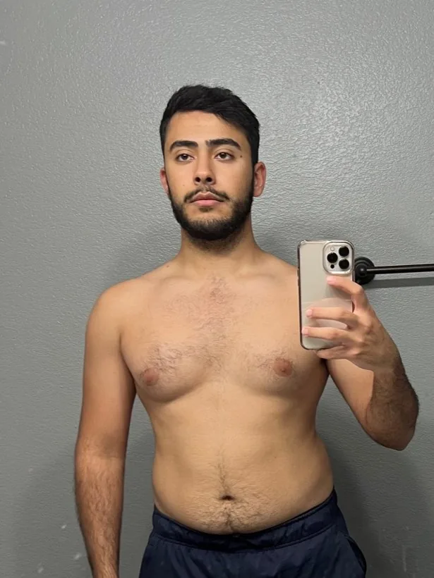

Your body runs on numbers. Get yours.
A 2-minute assessment that gives you your calories, your macros, and a dated timeline for your goal. Every number is calculated from your answers.
I built this because the plan is the part everyone can get. I wanted to see what happens when you actually have it.
What you get
All calculated from your answers, plus a grocery list, your goal date, and a PDF to keep.
Client results
I built this from what actually worked for me, and for the people I coach.

Before After
After“I’ve lost 20 lbs of fat and gained muscle at the same time. I was already working out and putting in the effort but wasn’t seeing real results. He helped optimize my nutrition, habits, and gave me a program tailored to my goals and lifestyle.”
 Before
Before“I was 30 lbs overweight, wearing bigger clothes to hide my body, and carrying a heaviness I couldn’t shift no matter what I tried. The frustration wasn’t really about the weight. It was the gap between the person I knew I was and the one I saw in the mirror every morning.”
In their words
“Working with Alex was different from the first conversation. He asked me questions nobody had asked me before, about my schedule, my pain history, my actual goal, and my lifestyle as a whole. I went from deadlifting a 35lb kettlebell to deadlifting 105lb using a trap bar and no back pain or knee pain. My energy is consistent in a way it was not before.”